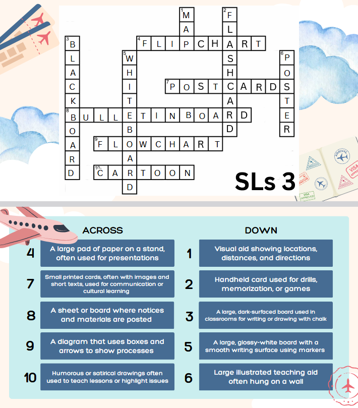
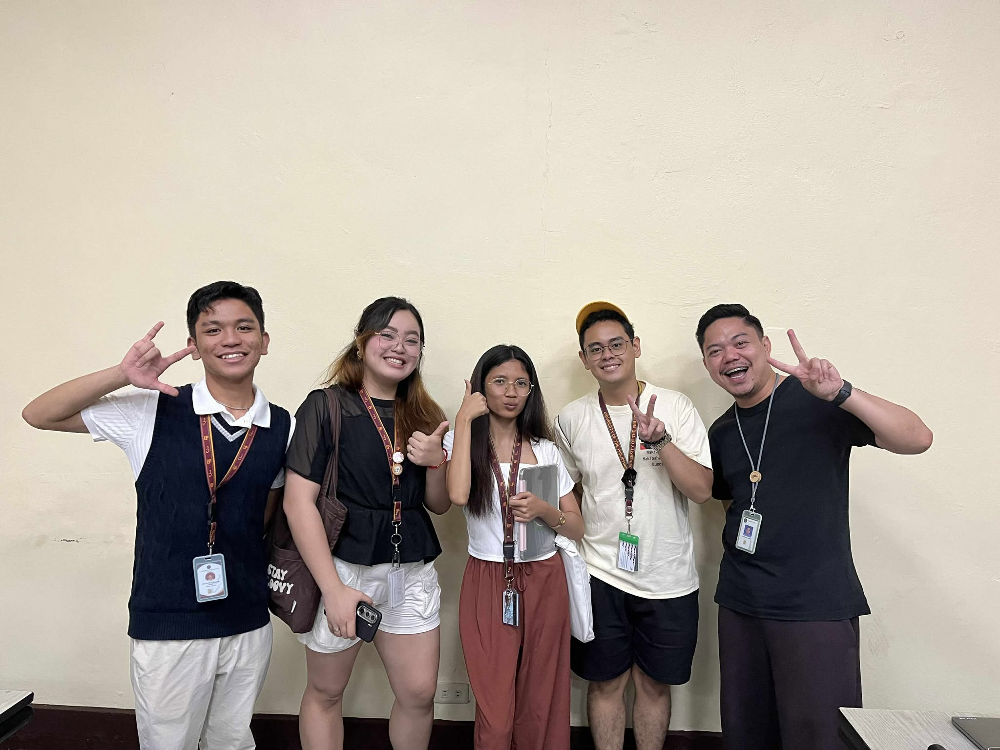
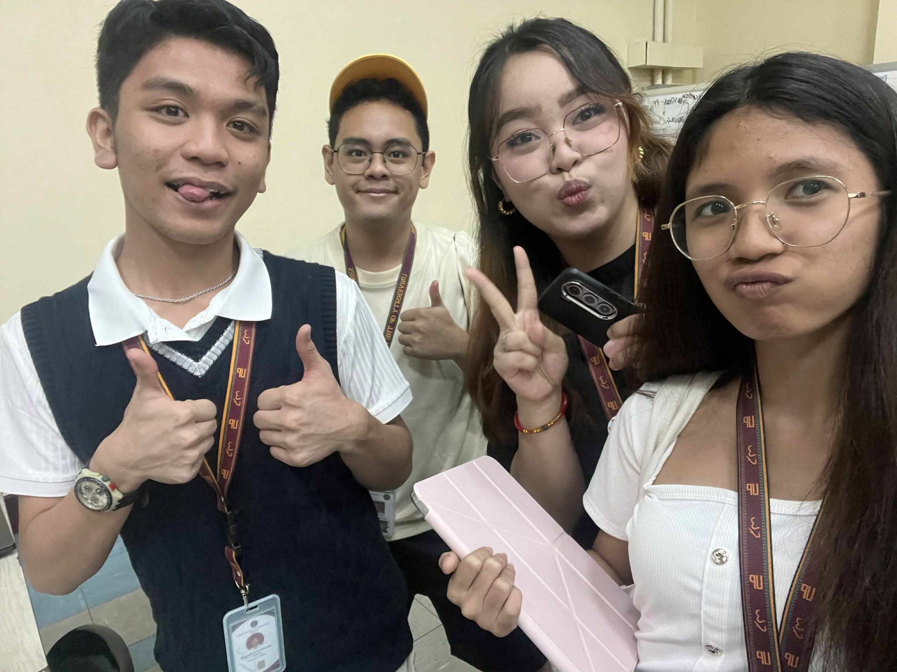
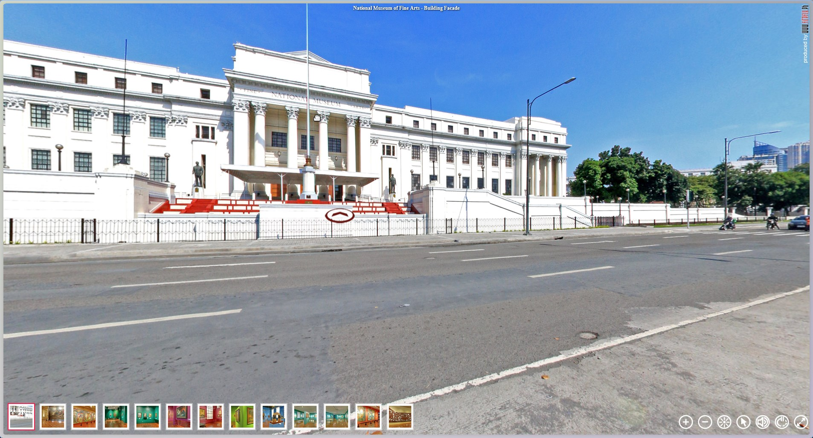
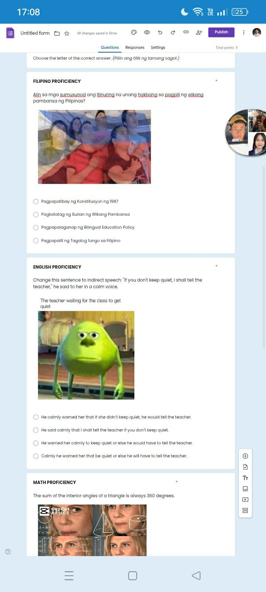
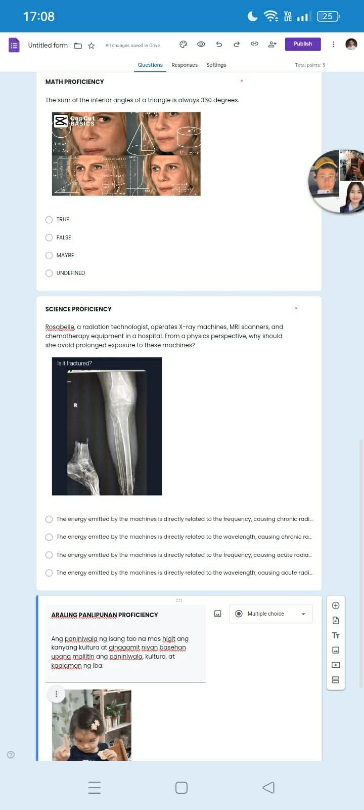
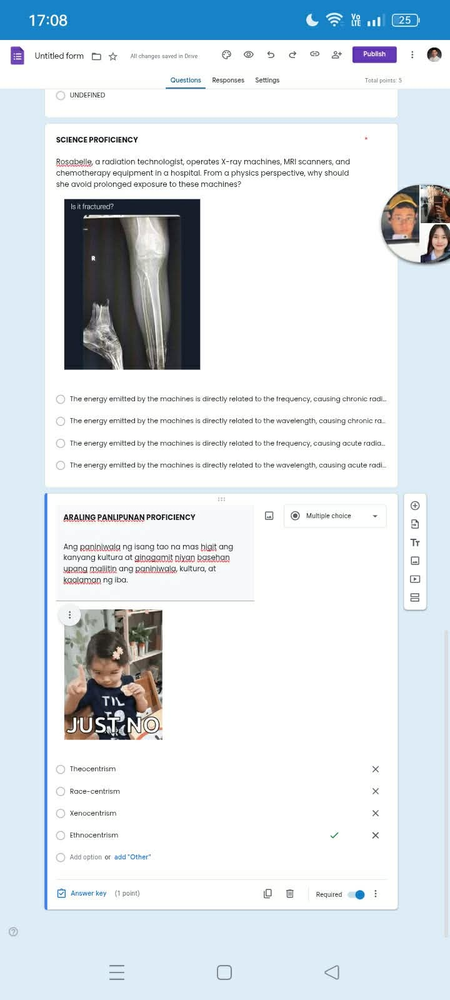
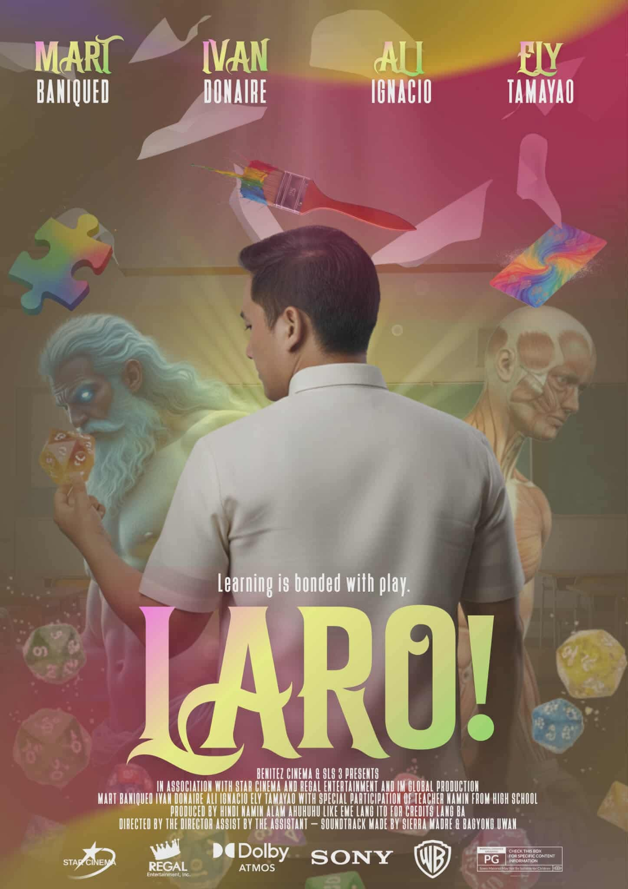
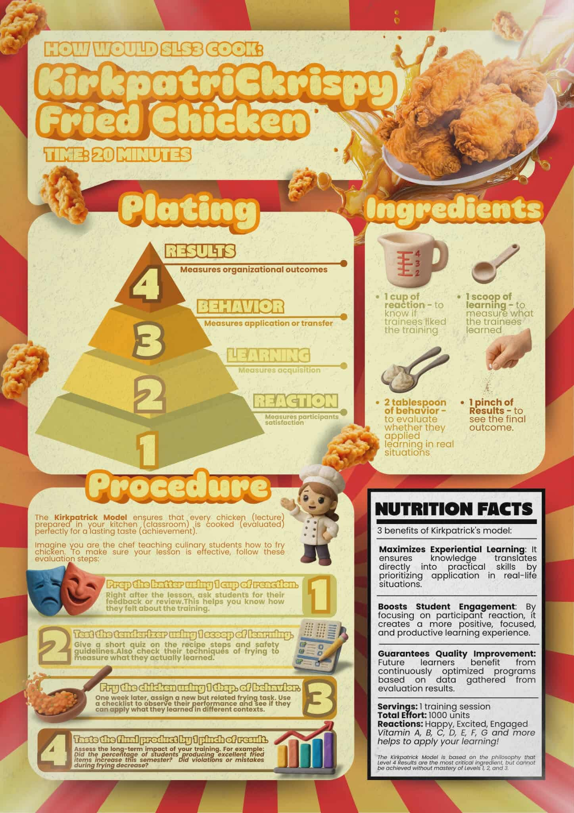

Concept Map
.jpg)
During the initial stages of creating our concept map for EDTECH, this was the first draft of the concept map. This draft was crafted by Mart.
The second draft, done by me, took elements of the initial draft but lessen the overall components. This is because it felt cluttered and can be simplified.
.jpg)
.jpg)
The third draft was a much simplier version our final product. The group brainstormed together and decided that EDTECh should be in the middle of everthing and there are arrows that go around different components that make up EDTECH.
Another round of brainstorming later, we decided that instead of it looking like a square, it should be a circle because every component of EDTECH circles around each other.
.jpg)
.jpg)
Our last draft finalize the compoments and sub-components that will make up the concept map.
The final product (revisions included). This design was accomplished and done with consultations from all group members.
.png)
Session 1

The first ever session for the semester. This session focused on 2D teaching materials such as flashcards, flipcharts, posters, etc.
For the pre-activty, we were task to answer a set of reflection questions after we solve the puzzle which is on the left
Session 2

The second session was focused on the first half of 3D Teaching Materials. SLS 2 focused on how everyday objects can be used in teaching a topic of a particular subject.
To left, we were tasked to seek out a 3D object within our immediate environment which can be used in teaching.
Session 3
Session 3 focused on Puppets and Resource Speaker as a 3D Instructional Material. This was done by my group. Our theme for this session was Sesame Streets as they are just like puppets and fits the theme of what we wanted to do. To the left is the presentation that we used during the session.
.png)
Our Pre-activity for the session was for the different groups to create there own puppets. This ranges from Stick Puppets all the way to Rod Puppets. We also tasked each group to create a short skit using the puppets they made. Below are the videos of the skit each group had:
SLS 1
SLS 2
SLS 4
SLS 5
SLS 6
SLS 7
SLS 8


Our picture after the session
Session 4
Session 4 delved into how Multimedia can be use as a form of Instructional material inside the classroom. For our group, we chose to discuss Google AR (seen on the left). Google AR is quite a neet tool as you are able to see up close and personal an animal you desire to see (if supported) without having to be in the same vicinity as them.
Session 5

Our Pre-activity for the session was for the different groups to create there own puppets. This ranges from Stick Puppets all the way to Rod Puppets. We also tasked each group to create a short skit using the puppets they made. Below are the videos of the skit each group had.
Session 6



Our Pre-activity for the session was for the different groups to create there own puppets. This ranges from Stick Puppets all the way to Rod Puppets. We also tasked each group to create a short skit using the puppets they made. Below are the videos of the skit each group had.
Session 7

For Session 7, second to the last session, it tackled the first few instructional design models, namely the ASSURE Model and Gagne's Nine Events of Instruction. For the pre-activity, we were task to create a poster representing our desired model of learning. For our group we wanted Play to be our model of learning.
Session 8

Session 8 was the last session for EDTECH 101 for the semester that tackles about the different instructional materials. Here, the groups were tasked to create a recipe poster for the different learning models. Our group was tasked to create one for Kirkpatrick's Learning Model which coincidentally, sounded like KFC sou we designed it around chicken.